Cube View Formatting
This is the chapter where we start to break the ice with Cube View formatting. Here, we will start things off simply and examine the lay of the land before continuing with more advanced options in Chapter 8.
Formatting a Cube View is something that can become a bit of an art form, and I must admit I do not know if anyone thinks they know how to handle every little thing. But that is not a goal you should be striving for when it comes to Cube View building.
When I first started with OneStream, I had a journey not unlike many other Consultants; I started building Cube Views. As a matter of fact – after my first six months with the company – I had built close to 300. They were not all for Financial Reports; some of them were for data entry, some for-data validation, some to eventually become Dashboards, and some for me to test my little rules.
But many of those Cube Views did become Financial Reports, and many of them were packaged up into Report Books and shipped through the Parcel Service. If you find yourself in the situation of building many Cube Views, your experience is probably not going to be too different from mine!
But this was back in 2015. Since then, the OneStream Community has grown, and the product has developed new enhancements to extend the capabilities of Cube Views and make them easier to build. The number of OneStream Administrators, Power Users, and Consultants building them has increased tenfold, and many of them are producing creative ways to stretch a Cube View. I must say, it has been incredible watching the new features pile in – some of them for my clients, some of them for things I never even thought to request. But I am proud to see these things come in and say crotchety things like, “Back in my day, you had to do that manually!” I cannot help but wonder what it would be like to learn Cube Views for the first time now.
You may be wondering why I am giving you this historical introduction when we have already talked about Cube Views quite a bit in this book. That is because this is where we start our first look at formatting. If you have had to build a lot of polished Reports, this is where you will spend most of your time. It did not take me that long to create my Cube Views; I started my first project with Consultants who had already created the Dimensions, built a few Dynamic Calcs, and even had some Forms going, so I could see how it was done. I plugged away at my shared rows and columns, copied Cube View POVs, skinned my knees on a few Time functions, and went cross-eyed, staring at Member Expansions like .base and .tree. But when the Cube View was built, the formatting was where I spent a lot of time.
I am not saying I was perfect; any Consultant who has been working with OneStream for a long time will shake their head at their mistakes, but I had the support and leadership of other great Consultants, the guidance of some whip-smart clients, and the patience and knowledge of everyone in the OneStream South Street (Rochester, MI) office to keep me going every day. Who would have thought that Cube View formatting would be so sentimental?!
Cube View Formatting
Getting Started with Formatting
Cube View Formatting › Getting Started with Formatting
Formatting Order of Operations
In the last chapter, we learned that there is an order of operations when querying data. Let us review:
The Cube POV gets overridden by the…
Cube View POV gets overridden by the…
Columns get overridden by the…
Rows
And then you do the hokey pokey, and you turn yourself around… sorry, I couldn’t resist. We could go into overrides as well, but we will get into that a little bit later in this chapter. Now we are ready to look at formatting, and there is a similar concept we must apply. Here we go:
Application Properties get overridden by the…
Cube View default formatting gets overridden by the…
Column formatting gets overridden by the…
Row formatting
Overrides can be applied here as well, but let’s point out that we have one consistent message with our overrides: rows beat columns. Just like we kept our overrides in mind when building our Cube Views to query data, we do the same thing when formatting our Cube Views.
Cube View Formatting › Getting Started with Formatting
Application Standard Reports
Application settings are commonly forgotten about when implementing OneStream. But there are many important properties here that you should change when starting the application build or at least be aware of for later phases. I recommend reviewing each property and familiarizing yourself with what is available. Who knows, you might find some fun surprises that you didn’t know could be altered.
When talking about the User Experience in general, if we look at the General tab, we may want to look at our Global Scenario and Global Time first. These can be referenced in Reports and Rules, but you need to have them set to load data into your application. If you are utilizing Global POV Substitution Variables (|GlobalTime| or |GlobalScenario|, for example), you will want to ensure these are set.
The other thing that we will want to look at is the Company Name and the Logo File. The Logo File will display on all your PDF printed Reports. You will want to ensure this is set because if one is not uploaded, it will display the OneStream logo! Upload your logo in a .png format and see the results on your PDF Cube Views. This can vary across the application using Cube View Extender Rules. These General properties are depicted in Figure 7.1 below.
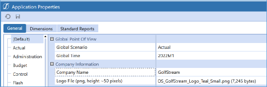
Figure 7.1
The Dimensions tab also has some important areas to look at. First, we have the Start Year and End Year. This defaults to 1996 and 2100. You may want to alter this so that whenever you have a selectable Time, your User does not have to scroll for too long and has more appropriate options based on what is in their application. You can always adjust these settings later.
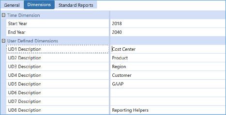
Figure 7.2
The above image also shows User Defined Description(s). These will populate the tool tips in the Cube POV, the drill down grid, and your Cube View rows and columns when building Cube Views (see Figure 7.3). They also play a major role in the End-User experience and should be updated for clarity. Remember, UD1 is likely a new concept for new Users, so having a friendlier name available to them will help them acclimate to their new OneStream application.
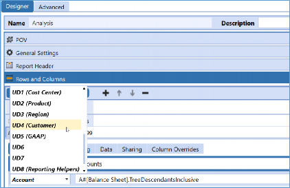
Figure 7.3
And finally – the real reason I brought you here – the Standard Reports tab. If you are a Consultant, I strongly encourage you to start every Phase 1 implementation by working through these properties and trying to match what you saw your clients display. Then, I would show them your work and get them to sign off on a general layout.
This tab is where you are going to set your general page formatting, but it is also where you alter the header bars and colors you see on the PDF versions of your Reports. So, if your Cube View is still showing blue lines and bars all over the place, this is editable. This is also an easy way to apply standard formatting (such as the font family) to the header, footer, and title of your Reports. We have highlighted these properties in Figure 7.4 and expanded it to show the Header Bar and Title settings, but they are very similar to the Header Labels and Footer formatting options. Any options here can also be overridden at the individual Cube View level using Cube View Extender Rules.
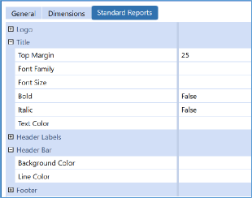
Figure 7.4
Cube View Formatting › Getting Started with Formatting
Versions of a Cube View
We have our application properties set; what’s next? We may need to ask ourselves, what version of the Cube View are we trying to format? We know Cube Views are versatile and can be featured in many areas of the application; when it comes to digesting our Cube Views, we can see them in three different formats:
Data Explorer Grid
Excel exported version
Printed PDF Report
Figure 7.5 depicts the Data Explorer Grid. From here, you can drill down into individual cells or use the highlighted icons to export your Cube View to Excel or a PDF. And as we stated before, each of these options can be formatted separately.
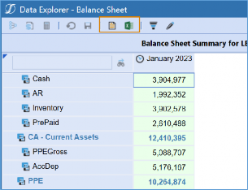
Figure 7.5
Typically, Data Explorer Grids are not as heavily formatted as the other two options. But you may consider throwing your weight into this version of the Cube View if your Cube View is being used within a Dashboard or even a Form. If the Cube View is eventually to be used as a Cube View Component in a Dashboard, people often employ tactics like making the grids white, turning off the grid lines, or altering the text in some way, shape, or form to make them sleeker. By the time you are done, people may not even think they are in a Cube View!
If you are looking at formatting a Cube View used for data collection, this may not require as much formatting. These Cube Views are more functional than stylish, and ensuring they create the best User Experience for data submission is key. However, if you are collecting information such as commentary, data attachments, or cell detail, providing some signal – such as a different background color in a cell – to the User may be wise as they are getting their feet wet with OneStream. Another thing to consider – when using Confirmation Rules – is how the use of conditional formatting can catch Users before they fail their rule (e.g., things like obvious traffic light coloring on the cells), thus expediting their End-User process. Sometimes functional is stylish!
What about the Excel exported version of the Cube View? Again, ask yourself the purpose of this Cube View and who will ultimately be using it. If you are a client or a Consultant, know your User population. Are they more likely to export their Cube Views to Excel and digest them there? If that is the case, you will want these formatted legibly (at least), so you can eliminate any need for a User having to reformat the Report or adjust any settings in Excel. You might also want to explore options like Excel outline levels when making a larger Cube View easier to digest. Usually, more robust formatting may also be required if the Excel exported version of your Cube View is used to create an Excel Report Book.
And finally, your PDF version of your Report. If you are creating Financial Statements, you likely have strict requirements to ensure these Cube Views look perfect. You may spend much of your time ensuring you have professional, legible, and consistent formatting. Because this tends to be the case for your Financial Reports, this may be more common on Consolidation projects or the first phase of a OneStream implementation. This is not always the case, but if you are sitting in a design session and seeing mostly printed Reports displayed, ensure ample time for review and formatting to be set up on the project.
Cube View Formatting › Getting Started with Formatting
Header versus Cell Format
Before we can get our hands dirty and start formatting our Cube Views, we have one more concept we need to address: are we formatting our headers or our cells? If this concept does not make sense to you, Figure 7.6 will help show what we are talking about.
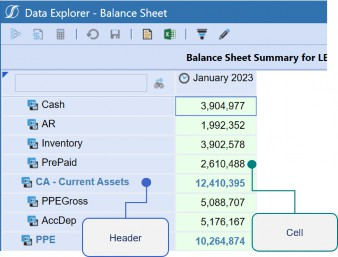
Figure 7.6
So not only do we have to think about Excel, PDF, or Grid, but we also have different formatting between the headers and cells of the Cube Views for each of these formats. Each of these is done separately, and we will have different properties between them. For example, cells will have number formatting, while headers are where we can apply Excel outline levels.
Where can this formatting be applied? If we remember our order of operations, this can be done within the default settings, the individual columns, and the individual rows, as well as the overrides. Figure 7.7 shows formatting applied to the default header and cell of the Cube View. This formatting can be set by choosing the various formatting options across the toolbar, or by clicking the ellipses icon next to the header/cell format properties.
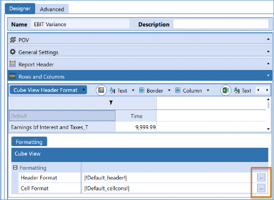
Figure 7.7
There will be slight differences between the column, row, and default formatting options, but for the most part, these options should be recognizable. If you are choosing to update via the toolbar, then you will know that if you are updating either the Data Explorer, Excel, or PDF by the color of the property, the Data Explorer is blue (and it is always first), Excel is green (second), and PDF is orange (always last). If you edit via the highlighted ellipses icons, see Figure 7.7, (which is how I like to do it), then you will just have the properties displayed to you in a list. Data Explorer is first, and referred to as general formatting, Excel is second, and PDF is last and referred to as Report. All your formatting gets applied in a comma-delimited list and can be keyed in if you start getting the hang of the syntax.
You may be wondering how intricate formatting can possibly get on the Data Explorer version of the Cube View. While we typically do see a little less activity here, there are two items you may want to take advantage of. The first is the ShowDimensionImages property, which you can set to False if you no longer want to see your Dimension icons in your Cube View. Figure 7.8 shows you the location of this property.
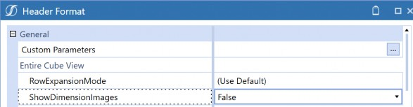
Figure 7.8
And Figure 7.9 shows you how a Cube View will look without the Dimension icons. This may be effective in reducing clutter on the page and creating a more professional look. Refer back to Figure 7.6 to see how a Cube View looks with the Dimension icons turned on by comparison.
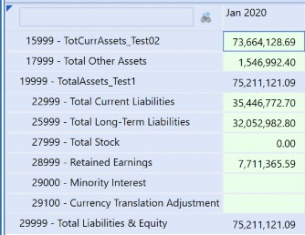
Figure 7.9
Another great option is to display the currency alongside the cells of the Data Explorer Grid. This is a top way to give the User some more information, especially if this Cube View is pulling multiple Entities. This setting is actually found in the default Cell Format of the Cube View. Figure
7.10 shows the property and the results.
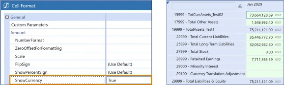
Figure 7.10
Cube View Formatting
More Intricate Formatting
Cube View Formatting › More Intricate Formatting
Overrides
One of the things we mentioned when listing the order of operations is that there is a final item that can be applied. These are your row and column overrides. This can be done for formatting or for Member Filters. How are they applied? If you are still on the screen we just showed, all you do is flip the last tab. If you are in the rows, you will have column overrides, and if you are in your columns, you will have a tab for row overrides. Overrides are entirely tied to the names that you provide on your rows and columns.
| Note: If you are using overrides, be careful when you change the names of rows and columns, or else you will undo them! |
You can key in a range or a comma-delimited list to ensure that you save space with your overrides. This is shown in Figure 7.11.
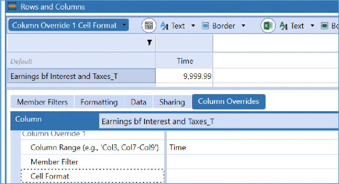
Figure 7.11
As you can see, you can choose a Member Filter or Cell Format. Why might I need an override? When it comes to overrides with formatting, you might choose this option if you have a variance column, and you need to have specific formatting on that variance column. Maybe you have a background color applied to your rows, and you want a different background color applied to the columns. This is common with cell formatting, as well.
In Figure 7.12, you will notice that there is a bright blue color applied to the rows, and a fun color called “blanched almond” is applied to the final column. The row overrides the column in this case (our default behavior). If you want this to be different, then you would need an override!
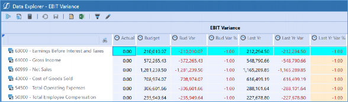
Figure 7.12
In this chapter, we are discussing formatting, but the most common reason for an override I see is more on the Member Filter side. This usually happens when we have a GetDataCell in the rows of the Cube View as well as in the columns. A calculated row and a variance column are not unheard-of when building Cube Views.
So, would I recommend overrides? My answer is if you need them, you need them, and it is awesome that OneStream gives you the option. They are great to keep in a pinch, but I would be careful if you rely on them too much. They are easy to miss when looking at the Cube View properties, and you only have four. If you can avoid them by being a little bit cleverer or more thoughtful in your design, the complexity and the maintenance of your Cube View will be reduced. For example, you can do things like placing as much formatting on the default formatting properties as possible. Furthermore, if there is consistent number formatting, instead of placing this in your rows or your formatting parameters, keep it on the default so you do not have collisions.
Okay, that makes the need for an override rare with formatting. However, what about the Calculation situation described above? That is a lot more common. One great way to combat this is to rely on creating calculated Members as opposed to GetDataCell columns for common formatting. This may not always be avoidable. Let’s look at Figure 7.13, which illustrates a Cell POV that has a GetDataCell Calculation within the cell.
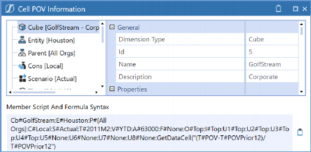
Figure 7.13
You can see that this cell queries a Member for each Dimension Type, but then there is a final portion tacked onto the end that represents the GetDataCell. So, if you had a calculated Member, then you would be able to have both Calculations working in tandem. You may have to tinker with things like which one is the Member, or how the Calculation is run, but this can set you up for a more simplified Cube View build that takes advantage of these calculated Members in the future. If not, you must write an override that encompasses both Calculations. And that can start to get a little messy!
Cube View Formatting › More Intricate Formatting
Using Formatting Parameters
Before we start laying the groundwork for common properties, or anything fancy like that, there is one best practice we must lay out… creating parameters for formatting. This is honestly a MUST and should be a portion of your Cube View rows and columns for sharing or any Cube Views being used as templates. Parameters should be built and displayed in front of stakeholders early in the Report building process.
To help you understand how much parameters can help you, I will take a little time to explain things. Let’s look at the setup in the GolfStream application in Figure 7.14.
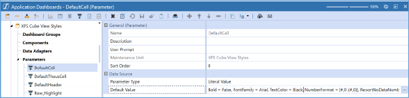
Figure 7.14
To create a parameter that can be used for formatting, we want to navigate to the Application Dashboards page, create a new parameter, and choose the Type of Literal Value. If you are new to parameters, you may have seen them in other areas of your application – as prompts – that display to ask you to key something in, choose a Member, or anything else. This Type of Parameter is different; it does not prompt; it simply holds a specific value. The most common use for this Type of Parameter is to hold your formatting for cells and headers. As you can see in the Default Value, we have the common delimited list of our Cube View formatting.
Why might you do this? Because it is much cleaner than seeing all that formatting displayed in your Cube View. Now, you just need to reference the parameter name in |!!| (|!ParameterName!|) and your formatting will be applied, plus you don’t always have to format your Cube View manually. You can use parameters for things like:
Default header/cell formatting
Total header/cell formatting
Subtotal header/cell formatting
Variance columns or rows
You can always apply additional formatting on top of the parameter on the individual Cube View. Using these parameters not only expedites your Cube View build but will also reduce your maintenance. How? Let’s say – down the line – that we no longer want our total cell formats to display a double line on the bottom of the cell. You only need to update the parameter now, and every Cube View that references this will be updated. No need to hunt and make a million changes! And, as a final tip, you can see the Object Usage Viewer icon on the Application Dashboards page to see what is referencing this parameter.
Typically, I would recommend building a Maintenance Unit to represent your Literal Value Parameters for Cube View formatting. This is a great way to host them all in one nice and neat place. You can bring in the Cube View styles Dashboard Maintenance Unit from GolfStream, but you may not require all those parameters, and you may have completely different formatting requirements. But it is nice to see the example to know how it is done.
Cube View Formatting › More Intricate Formatting
Conditional Formatting
This is where things get suitably fun! Conditional formatting is something that gets a lot of people excited and can really bring some color to your Cube Views (sometimes literally). In its simplest form, it is applying formatting that says, “If the data is within this threshold, alter the formatting to signal this to the User.” I see a lot of conditional formatting on Financial Reports, but they also make great tools when working with Cube Views that are incorporated into Dashboards for eye-catching analysis. I also use them in Forms quite a bit, especially for clients with more Confirmation Rules. This can signal to a User that they are about to have a problem before they fail a Confirmation Rule.
Conditional formatting within OneStream is an interesting topic because we have evolved how it is done over the years. Back in the day, conditional formatting was applied through OneStream Studio. This meant we would take a Cube View and bring it into OneStream Studio to apply formatting. Once this was done – to see your formatting – you were able to run it as a Dashboard Report.
Since then, much has changed. Dashboard Reports now have their own Designer tab where you can adjust your Reports directly and – as more releases pass – this interface gets easier to work with and has more and more capabilities.
Historically, we also saw one other change in conditional formatting: you were able to incorporate it into your Cube Views directly using Cube View Extender Rules. This Rule Type came with some coding required, but Snippets (the Snippet Editor Solution is found on the MarketPlace) made it a breeze to do things like change the logo, tweak headers and footers, and (of course) add conditional formatting. This could be done to PDF versions of Cube View Reports.
Then, conditional formatting underwent one more makeover and is now a part of regular Cube View formatting. This can be seen in Excel, PDF, and Data Explorer Views. This made conditional formatting much easier and is another example of how OneStream is always improving the product.
Now that I have whipped you up, let’s take a quick look at how this is applied in OneStream.
When you open your header or cell formatting, you can write your conditional formatting directly in the text box, or you can click the Conditional Formatting icon to open the window seen in Figure
7.15 to help you get the syntax correct. If that is not enough, if you look in the left box – in Figure
7.15 – you can also hover over the question mark icon to see examples of conditional formatting syntax.
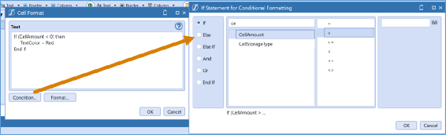
Figure 7.15
Using the question mark icon, conditional formatting dialogue box, the object lookup icon, and the formatting options available within the window, you should have no problem getting used to conditional formatting syntax.
I showed a simple and obvious example here, but as you peruse the various conditional formatting options, you can see that you can grab things like RowE1MemberName (Row Expansion 1 Member Name) or RowE2MemberDescription (Row Expansion 2 Member Description). You can also grab things like the expanded row numbers, even rows, cell Storage Type, indent level, the name of the row/column, and so much more.
Okay, the possibilities seem endless, but there is one very creative thing you can do to reduce your Cube View Maintenance using conditional formatting. The ability to grab the name of the row or column is what makes this possible. One of the most common Cube View design tips is to name your rows and column something descriptive, so someone can follow the logic of your Cube View build. People commonly call rows _T for total rows, _ST for subtotal rows, and _D for detail rows. If you establish a naming convention like this, you can use conditional formatting to make it so you no longer have to go into the individual rows and apply your formatting! If you really want to impress your friends, though, you can still have your parameters handy and drop them into your conditional formatting, making one cohesive, dynamic, easy-to-maintain formatting rule that anyone can follow. Figure 7.16 gives you an example of this.
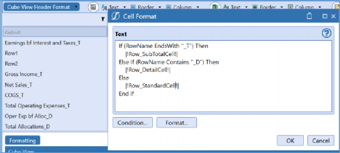
Figure 7.16
Cube View Formatting › More Intricate Formatting
General Settings
Very few people take the time to go through the General Settings of the Cube View. There are some great tricks you can employ in your formatting with these properties.
I will start simply, with our header text properties. It is great to nail down – ahead of time – which Dimension Types should display the Member Name, Member Description, or both. If you set this one, you can place them in your Cube View template, and you never have to worry about them again. This is seen in Figure 7.17.
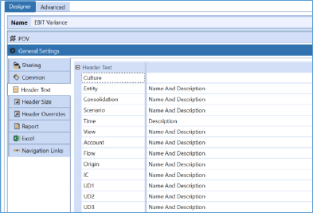
Figure 7.17
Next up is your header size. I am going to draw your attention to Row Header Widths because this has gotten me out of a few jams in my career. You may have a situation where you need to expand the widths of individual rows because the text is wrapping or – as I have used it – you may be trying to shrink your Report, which is just a few rows over one page, back down to a single page. This can be done by creatively tinkering with the width settings here. You can apply these to your Data Explorer (first), Excel (second), and PDF (third) options for each of your row expansions.
Simply key in a pixel number and adjust as necessary. Pixels are small, so use increments of 100 to see a big impact. If you are fitting to one page, widthwise, and your Cube View is just a little too big, this can uniformly shrink the size of your font. Sometimes it does not work if you don’t have many columns, but it has served me well over the years. Check out these settings in Figure 7.18.
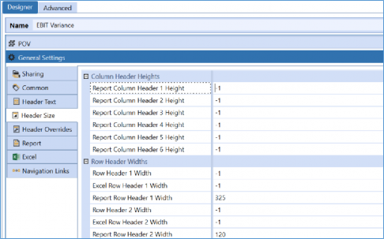
Figure 7.18
The next one is our Header Overrides, not to be confused with our row and column overrides. Header Overrides are a great option if you need to incorporate more Dimensions into your rows or columns than your expansions will allow. For example, let’s say I have columns in my Cube View and am expanding upon Time and Entity, but I would also like to show my View Dimension across the columns. Our columns, though, only allow you to show two expansions, so you may feel out of luck. You could get creative with your column naming, or you could adjust your Column Headers in the Header Overrides to display View as well. This will allow you to show three Dimensions instead of just two. Figure 7.19 shows you the results.
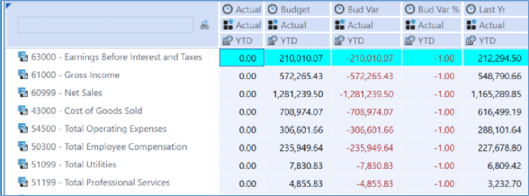
Check out these properties in the Header Overrides section to see how you can really flex your rows and columns. This is also a great trick if you would like to reorder the way your Dimensions display (maybe you want to flip-flop Expansion 1 and Expansion 2) without rebuilding your entire Cube View. Or perhaps you are sharing columns, and one Cube View needs to display an additional Dimension. No need to rebuild anything; use Header Overrides to flip your Cube View around!
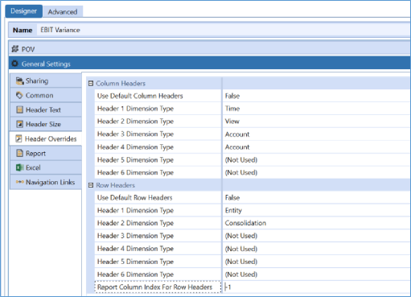
Figure 7.20
Before we leave these properties, I need to point out one final item, Report Column Index For Row Headers. Many people do not know this, but this is how you create a Butterfly Report. This is shown in Figure 7.21. Simply key in the number of columns you want your row headers to hop over. For example, in this image, I keyed in the number 2 instead of -1 (which means default) and looked at my majestic Report spread its wings! For reference, this is only visible in the PDF version of your Report.
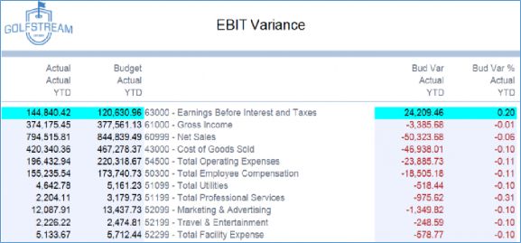
Cube View Formatting
Conclusion
We still have a few more chapters to go with Cube Views, but at this point, we have laid a pretty good foundation. If you are new to them, I hope you have learned some important tips and even picked up a few tricks to get a handle on those final reporting requirements. I will leave you with a few final thoughts on the design of Cube Views, especially when it comes to formatting.
Try to nail down common formatting as soon as possible. Work with your application Standard Reports (if you are starting with a new application) to ensure your headers, logos, and colors are all set. Then start to pull together some common formatting and save them as parameters. This will make life a lot easier for any future Report builders that come into your application. In turn, use things like your general settings to your advantage and try your hand at some creative conditional formatting. Lastly, share rows and columns and create a Cube View template. All these things will expedite your build, reduce maintenance, and keep things organized!